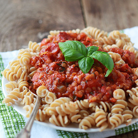

Red Lentil Sauce

Description
Red lentil sauce is a vegetarian-friendly take on a traditional stuffed pepper sauce that brings all of the savory and umami goodness one would expect.
Ingredients
- 1 cup dried lentils
- 1 jar of Rao's marinara sauce
- 3-4 green bell peppers
- 1 small can of tomato paste
- Salt, pepper, garlic powder to taste
- Place lentils in a small pot, fill with water to just above the level of the lentils. Bring to a boil, then simmer until most of the water has been absorbed.
- While the lentils are cooking, chop peppers into narrow strips or other preferred shape. Add to a large pot with olive oil and sautee until slightly softened.
- Reduce heat on large pot, then add sauce, tomato paste, and spices to the peppers. When lentils are ready, add them as well.
- Cook on low heat for ~30 minutes, stirring regularly.
- Bake some spaghetti squash or boil some pasta and enjoy!